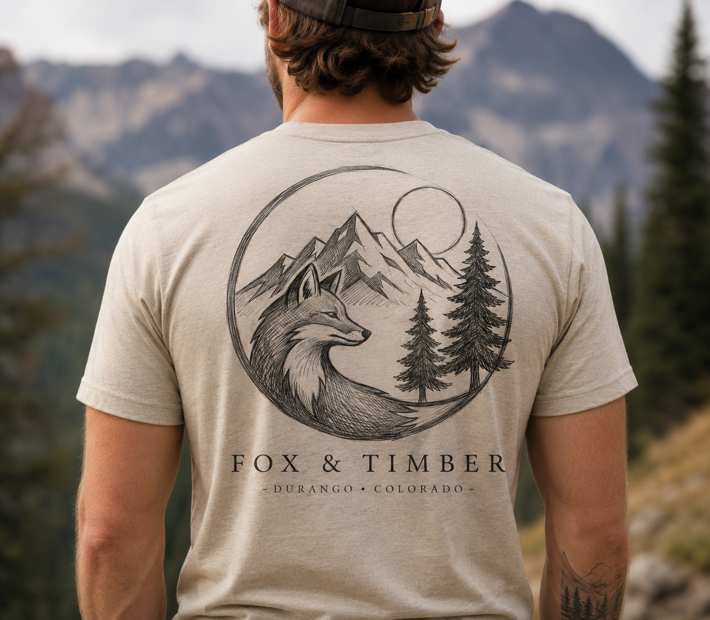
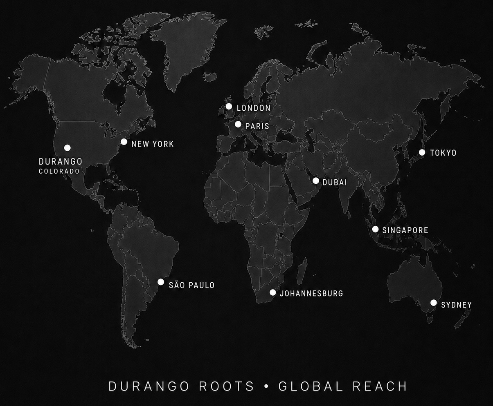

Creative consulting • Brand creation
We build brands people can already picture.
Fox & Timber turns loose ideas into believable worlds through strategy, identity, storytelling, design, and launch-ready creative systems.
What we actually do
We do not just design logos.
We create the strategy, visual language, packaging direction, digital presence, messaging, and launch material that turn an idea into an entirely complete, cohesive brand. Every piece is designed to work together, giving your brand a clear identity, a consistent voice, and everything it needs to feel real, recognizable, and ready for the world.

From thought to touchpoint
A brand should feel unmistakably itself.
Our work begins before the logo and continues beyond it. We help define the promise, personality, audience, architecture, and visual system needed to make every touchpoint feel like it belongs to the same world. Nothing should feel accidental; every element should reinforce what the brand is, what it stands for, and how people experience it.
Explore our servicesOur process
Make the invisible visible.
- 01
Discover
We listen for the idea underneath the idea: what it means, who it serves, and why it should exist.
- 02
Define
We shape the position, language, structure, and creative direction that give the brand a clear center.
- 03
Design
We build the identity and all of the practical systems around it: digital, physical, editorial, and promotional.
- 04
Deploy
We prepare the brand for launch, help it find its place in the world, and stay available for support long after.

Local roots • Global reach
Small studio. Expansive thinking.
Fox & Timber is rooted in a small town in Southwest Colorado and built from the beginning to collaborate anywhere, in any time zone. Being a small studio keeps the work personal, flexible, and focused, while expansive thinking allows every project to reach beyond borders, industries, and expected solutions.
Bring us the wild idea